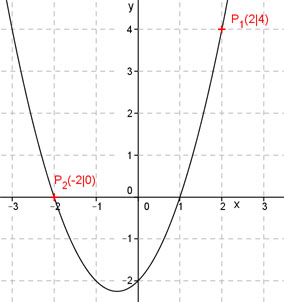

Aufgabe 45 Bestimmen Sie die quadratische Funktion der Form y = x2 + bx + c, die durch die Punkte P1(2|4) und P2(-2|0) geht. Punktkoordinaten in y = x2 + bx + c einsetzen: x1 = 2 und y1 = 4 ergibt 4 = 22 + 2b + c 4 = 4 + 2b + c | -4 0 = 2b + c (1) x2 = -2 und y2 = 0 ergibt 0 = (-2)2 - 2b + c ergibt 0 = 4 – 2b + c (2) Additionsverfahren: 0 = 2b + c 0 = -2b + c + 4 ------------------- 0 = 2c + 4 |-4 2c = -4 |:2 c = -2 In (1) eingesetzt: 0 = 2b - 2 0 = 2b - 2 |+2 2b = 2 |:2 b = 1 y = x2 + x – 2 